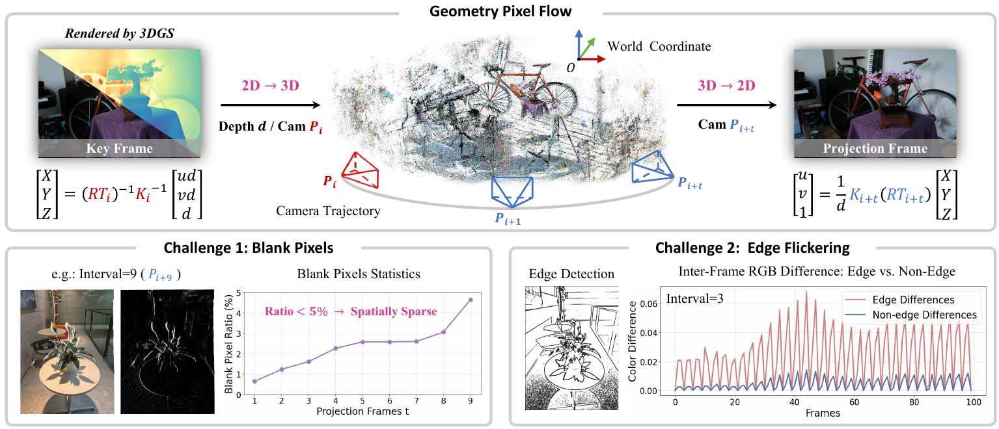
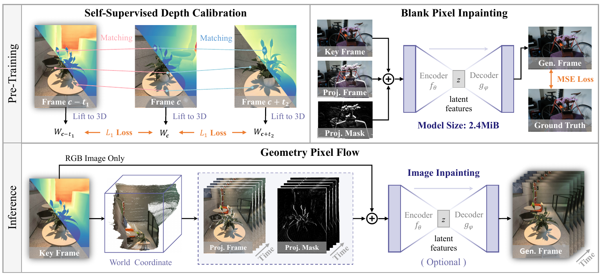

Project
RGB-D keyframes are lifted to world coordinates and reprojected along the camera trajectory, replacing costly Gaussian sorting and alpha blending on intermediate frames.
Sequence-level 3DGS acceleration
Zhejiang University
Overview
Recent work on accelerating 3D Gaussian Splatting (3DGS) has mainly optimized each frame independently through pruning, rasterization, or attribute compression. This overlooks the strong temporal coherence of continuous camera trajectories and repeats nearly identical work across adjacent views. GSFlow introduces a sequence-level acceleration paradigm that is orthogonal to these frame-level methods.
GSFlow renders RGB and depth only for selected keyframes, lifts their pixels into world coordinates, and projects them into following views as geometry pixel flow. Sparse blank regions are completed either by a lightweight inpainting network for quality or a training-free CUDA filter for speed. A self-supervised depth calibration strategy further suppresses edge flicker by aligning inter-frame geometry. Across accelerated 3DGS baselines, GSFlow delivers about 2x additional speedup while preserving rendering quality and temporal consistency.
Visual comparisons
Switch between frame-synchronized quality comparisons and acceleration-performance recordings.
Method
Render selected keyframes once, then move their pixels through 3D space to synthesize adjacent views.

RGB-D keyframes are lifted to world coordinates and reprojected along the camera trajectory, replacing costly Gaussian sorting and alpha blending on intermediate frames.
Sparse blank regions are filled by a compact UNet for higher fidelity or a customized nearest-neighbor CUDA filter for maximum throughput.
Self-supervised depth calibration aligns corresponding 3D points across nearby frames, reducing edge errors and visible temporal flicker.

Experiments
GSFlow compounds the gains of existing frame-level methods instead of replacing them.
| Method | Tanks&Temples | Custom Video Dataset | ||||||
|---|---|---|---|---|---|---|---|---|
| PSNR | SSIM | LPIPS | FPS | PSNR | SSIM | LPIPS | FPS | |
| 3DGS | 31.44 | 0.926 | 0.143 | 92 | 33.77 | 0.946 | 0.160 | 169 |
| 3DGS + GSFlow | 30.77 | 0.913 | 0.155 | 224 | 33.15 | 0.928 | 0.177 | 426 |
| LocoGS | 31.23 | 0.921 | 0.157 | 165 | 32.62 | 0.933 | 0.191 | 421 |
| LocoGS + GSFlow | 30.22 | 0.915 | 0.167 | 310 | 31.87 | 0.919 | 0.211 | 637 |